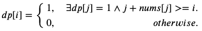

55.跳跃游戏
给定一个非负整数数组，你最初位于数组的第一个位置。
数组中的每个元素代表你在该位置可以跳跃的最大长度。
判断你是否能够到达最后一个位置。
示例 1:
输入: [2,3,1,1,4]
输出: true
解释: 从位置 0 到 1 跳 1 步, 然后跳 3 步到达最后一个位置。
示例 2:输入: [3,2,1,0,4]
输出: false
解释: 无论怎样，你总会到达索引为 3 的位置。但该位置的最大跳跃长度是 0 ， 所以你永远不可能到达最后一个位置。
分析之后我们可知，一旦跳到有0的地方就没法继续往下跳了。读完题目我想到的方法是回溯和DP。
回溯法
尝试所有跳法，如果遇到跳到0的情况，回溯进行下一种跳法。代码如下：
1 | class Solution { |
只通过了72/75个测试用例，最后三个数据量太大，超时未通过。
动态规划
设$dp[i]$为能否从0到达i点。状态转移方程如下：

通俗的解释就是：如果从0能到达j点，而j又能达到i点，那么可以得出0可以达到i点。最终$dp[n]$就是我们想要的结果。代码略。
贪心
依次遍历每个点能到达的最远距离，如果遇到了当前所在点大于了最远距离，则返回false。（代码来源于网络）
1 | class Solution { |
更直观地讲，数组中的0就类似于一个围栏，需要有前面的某个点能够跨过这个围栏，如果都不能跨过这个围栏，就根本没有可能达到终点了。
64.最小路径和
既然上一道题都碰到DP了，那就再做一道吧。。。
给定一个包含非负整数的 m x n 网格，请找出一条从左上角到右下角的路径，使得路径上的数字总和为最小。
说明：每次只能向下或者向右移动一步。
示例:
输入:
[
[1,3,1],
[1,5,1],
[4,2,1]
] 输出: 7
解释: 因为路径 1→3→1→1→1 的总和最小。
太明显的动态规划了，状态转移方程也比较好写。设$dp[i][j]$表示到点$(i,j)$时走过的最小路径长度。状态转移方程如下：

边界条件：$dp[0][0]=grid[0][0]$.
1 | class Solution { |